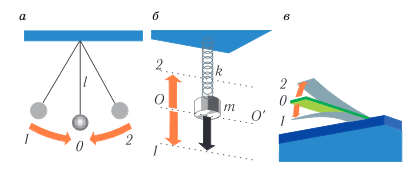
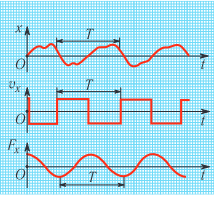
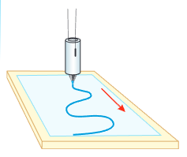
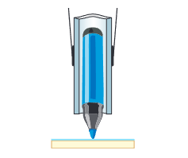
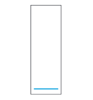
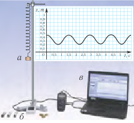
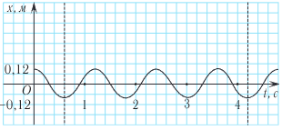
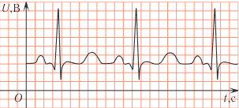
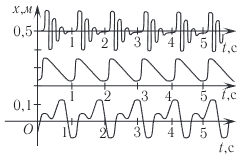

§ 1. Колебательное движение.
Гармонические колебания
В мире разнообразных механических движений достаточно часто встречаются периодические (повторяющиеся) движения: колебания маятника часов, движение поршня в двигателе автомобиля, биение сердца человека. В чем особенности таких движений? Какими параметрами они описываются? В чем их отличия от поступательного и вращательного движений?
Движение абсолютно твердого тела, при котором прямая, проходящая через любые две его точки, остается параллельной самой себе, называется поступательным движением.
Вращательным называется движение тела, при котором каждая точка тела движется по своей окружности, и центры этих окружностей лежат на одной неподвижной прямой. Эта прямая называется осью вращения. Равномерное вращение характеризуется периодом T или частотой n. Период обращения T равен времени, за которое тело совершает один оборот по окружности. Частота n равна числу оборотов в единицу времени.
Тело находится в равновесии, если векторная сумма всех сил, приложенных к нему, и алгебраическая сумма моментов этих сил относительно любой оси равны нулю. Равновесие называется устойчивым, если при малом отклонении тела от положения равновесия оно возвращается в исходное положение.

Разные виды механического движения характеризуются различной степенью повторяемости. Так при поступательном движении тело может вообще не вернуться в исходное положение, тогда как при вращательном движении это произойдет через промежуток времени, равный периоду обращения T.
В окружающем нас мире очень широко распространен и такой вид движения тела, при котором оно сначала движется в прямом направлении, а затем — в обратном. Такое движение повторяется неоднократно по одной и той же траектории. Подобные примеры приведены на рисунке 1. При этом через любую точку траектории, за исключением крайних точек 1 и 2 (см. рис. 1), тело проходит как в прямом, так и в обратном направлениях.
Такой вид движения называется колебательным. Колебательное движение совершают такие механические системы, как маятник, качели, листья деревьев под воздействием ветра, струны при игре на гитаре или пианино. Движение атомов в кристаллической решетке также носит колебательный характер.
Таким образом, для колебательного движения характерно свойство повторяемости (см. рис. 1). Когда физические величины, характеризующие движение (например, координата x, проекции скорости vx и действующей силы Fx), принимают одни и те же значения через равные промежутки времени (рис. 2), то такие колебания (движения) называются периодическими.

Минимальный промежуток времени, по истечении которого повторяются значения всех физических величин, характеризующих колебание, называется периодом колебаний и обозначается буквой T:
где Δt — промежуток времени, за который произошло N колебаний.
Колебания по своей природе могут быть не только механическими, но и электромагнитными (периодические изменения напряжения и силы тока в электрической цепи), термодинамическими (колебания температуры с течением времени) и т. д. Таким образом, колебания — это особая форма движения в том смысле, что различные по своей природе физические процессы (механические, электромагнитные и т. д.) описываются одинаковыми математическими зависимостями физических величин от времени.
Для описания колебаний, как и для вращательного движения, наряду с периодом колебаний T используют величину, которая называется частотой колебаний. Она обозначается буквой n. Частота n равна отношению числа колебаний N к промежутку времени Δt, за которые они произошли:
Следовательно, частота колебаний показывает, какое число колебаний тело совершает в единицу времени (за секунду):
Кроме частоты ν часто используют циклическую частоту ω, которая показывает число колебаний, совершаемых за промежуток времени Δt, равный 2π секунд:
Для наглядного описания колебательного движения удобно представить зависимость координаты x колеблющегося тела от времени t в виде графика, т. е. построить график функции x(t).
Для механической «записи» колебаний можно использовать установку, изображенную на рисунке 3. В этой установке к грузу, подвешенному на двух нитях, прикреплен фломастер. Он может свободно перемещаться в трубочке для того, чтобы постоянно касаться листа бумаги при колебаниях груза. Если отклонить груз поперек листа бумаги и отпустить, то кончик фломастера будет описывать на листе прямую линию, которая является траекторией движения груза.

Если же при этом лист бумаги будет двигаться с постоянной скоростью, то будет происходить сложение двух движений во взаимно перпендикулярных направлениях. В результате на бумаге появится кривая (см. рис. 3), каждая точка которой соответствует положению колеблющегося фломастера в различные моменты времени. Получилась развертка колебательного движения, т. е. график движения колеблющегося тела.
Такая кривая называется осциллограммой (от лат. oscillum — колебание и греч. γράμμα (грамма) — запись).


Для развертки колебаний можно использовать и современную установку с компьютером, приведенную на рисунке 6. Подвесим на цилиндрической пружине груз. Отведем его вниз, отпустим и будем регистрировать колебания с помощью ультразвукового датчика движения. Он будет определять расстояние до подвешенного груза. При соответствующем программном обеспечении зависимость расстояния от груза до датчика от времени будет изображаться на экране компьютера (см. рис. 6).

Какие выводы можно сделать исходя из представленных осциллограмм?
Во-первых, координата тела изменяется периодически (см. рис. 6). Обычно систему координат выбирают так, что ось времени проходит через точку, значение координаты х = 0 которого соответствует положению устойчивого равновесия (рис. 7). В таком случае координата груза будет изменяться от максимального значения x = xmax = A до минимального значения x = xmin = −A. Максимальное отклонение маятника от значения х = 0 (положения равновесия) называется амплитудой колебаний и обозначается буквой А. В данном случае ее величина равна А = 0,12 м.

Следовательно, колебания, кроме периода (частоты), характеризуются амплитудой колебаний.
Во-вторых, скорость и ускорение при движении колеблющегося тела непостоянны во времени. Они также периодически меняются во времени. Так, скорость маятника максимальна (v = vmax) при прохождении положения равновесия (х = 0) и равна нулю v = 0 при х = A или х = −A.
Форму кривой, выражающей зависимость изменения колеблющейся величины (например, координаты, проекции скорости, проекции ускорения) от времени, называют формой колебаний (см. рис. 2).
Осциллограммы различных колебаний широко используются в медицине, науке и технике. Колебания, которые совершают грузы на пружине или подвешенные на нити, являются наиболее простыми по форме (синусоидальными или косинусоидальными) (см. рис. 2). На рисунке 8 приведена электрокардиограмма (от греч. καρδιά (кардио) — сердце) — запись биений сердца человека, позволяющая определить состояние сердца и, если необходимо, назначить своевременное лечение. В отличие от осциллограммы колеблющегося груза (см. рис. 7) форма электрокардиограммы (см. рис. 8) существенно более сложная.

Заметим, что амплитуда и период колебаний не дают полного представления о характере периодического процесса, так как процессы могут иметь одинаковую амплитуду и период, но совершенно разную форму (рис. 9).

Как же математически описываются гармонические колебания?
Они описываются уравнениями, в которых координата (смещение) тела изменяется во времени по закону косинуса:
или синуса:
Величина φ = ωt + φ0 называется фазой колебаний. Она определяет состояние колебательной системы (координаты, скорости, ускорения) в любой момент времени при заданной частоте и амплитуде. Значение в начальный момент времени φ(t = 0) = φ0 называется начальной фазой φ0.
Зависимость координаты от времени x(t) (соотношения (5) и (6)) называется кинематическим законом движения, поскольку позволяет определить положение колеблющегося тела. Исходя из него можно найти его скорость, ускорение в любой момент времени.
Координата тела (смещение тела из положения равновесия) x(t) в момент времени t при периодическом движении подчиняется равенству:
x = f(t), f(t) = f(t + T),
где f(t) — заданная периодическая функция от времени t, T — период этой функции.
Движение, при котором координата тела изменяется во времени по закону синуса (или косинуса), называется гармоническим колебанием.
Таким образом, основными кинематическими величинами, характеризующими периодические колебания, являются: период (Т), частота (n), циклическая частота (ω) и амплитуда (A).
В СИ основными единицами этих величин являются: периода колебаний — секунда (1 с), частоты колебаний — герц (1 Гц), циклической частоты — 1 с−1. 1 Гц равен частоте колебаний тела, при которой за 1 с тело совершает одно полное колебание (1 Гц = 1 с−1).
Название единицы частоты герц дано в честь немецкого физика Генриха Герца, который экспериментально открыл электромагнитные волны.
Обратим внимание на то, что величины T, n, ω, A, которые характеризуют гармонические колебания тела, аналогичны соответствующим величинам, описывающим движение тела по окружности (табл. 1).
| Физические величины | Вид движения | |
|---|---|---|
| Движение по окружности | Гармонические колебания | |
| R, A | R — радиус окружности | А — амплитуда колебаний |
| φ | Угол поворота | Фаза колебаний |
| T | Период обращения | Период колебаний |
| N | Число оборотов | Число колебаний |
| ν = N/Δt = 1/T | Частота обращения | Частота колебаний |
| ω = Δφ/Δt = 2π/T | Угловая скорость | Циклическая частота |
Частота n (период T) гармонических колебаний зависит только от свойств системы, в которой происходят колебания. Амплитуда колебаний A и начальная фаза φ0 определяются не свойствами самой системы, а тем способом, каким в системе вызваны колебания. Так, колебания можно возбудить отклонением от положения равновесия, а можно — толчком из положения равновесия.
Все величины, рассмотренные выше, а именно период T (1), частота n (3), циклическая частота ω (4) и амплитуда A, определяют колебательный процесс в целом, независимо от его природы.